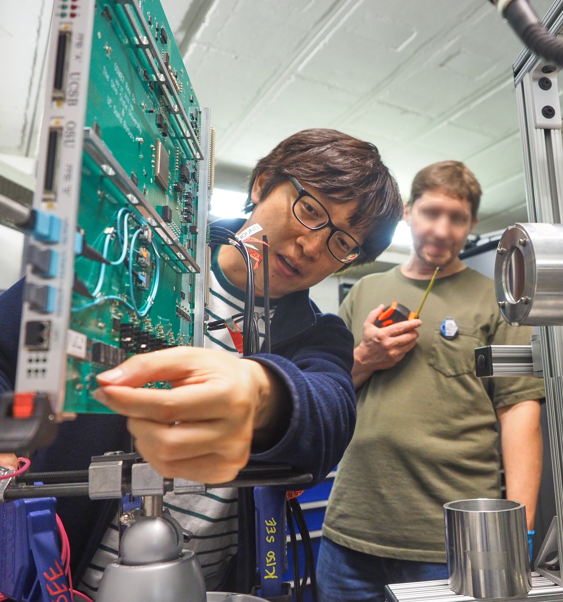

Welcome to the Korea Univeristy Experimental Particle Physics DREAM group

Measuring radiation effects at Texas A&M University Cyclotron
Welcome to the Korea University Particle Physics DREAM (Design, Realize, Experiment, Analysis, Measurement) Group. The group probes fundamental questions in particle physics with experiments.
CMS experiment
Our group is investigating particle physics with the CMS (Compact Muon Solenoid) experiment.
Particle physics questions that are being probed.
- Why is the Higgs boson mass (125 GeV) light compared to it's high energy corrections (\(10^{19}\) GeV)?
- What is the physics of dark matter?
- Are there unknown particles that couple with the Higgs boson?
- What is the shape of the Higgs potential that determines the fate of the universe?
- What is the source of the matter anti-matter asymmetry observed in the universe?
Technical explaination of the experiement, where one can develop and get experience on these technologies.
- Particles are created by accelerating protons to collide with each other at high energies (13-14 TeV).
- These particles pass through silicon, scintillator, and gas detectors which create electric pulses.
- The detector electric pulses are digitized through ASIC chips and electronic boards.
- Quick (0.000004 second) firmware (FPGA) triggers are used to select the digitized detector data to store.
- Data is stored through high speed (4 Tb/s) Data Acquisition (DAQ) using optical transceivers.
- The Big Data (100 Petabyte) is processed with cloud of (10,000) servers around the globe.
- Measurements are made by analyzing data with software, where statistical methods and machine learning techniques such as artificial intelligence are used.
- Monitoring software is used to continuously check the status of the detector and servers.
Research interests
Year 2025
| CMS physics data analysis | Motivation |
|---|---|
| Higgs boson decaying to a Z boson and photon | Are there unknown particles effecting this decay? |
| Higgsino decaying to a Higgs boson and Neutralino | Do SUSY particles (Higgsino, Neutralino) exist? |
| Technology development | |
| Transformer neural network | Using Large Language Model network structures in Particle Physics |
| Firmware (FPGA) | For efficient triggering and high speed DAQ |
Group leader's (Jaebak Kim) biography
| Year | Title | Location |
|---|---|---|
| 2025 - 2025 | Assistant Professor of Physics | Korea University |
| 2019 - 2025 | Researcher in Particle Physics in CMS experiment | University of California, Santa Barbara |
| (2024) Training toward significance with the decorrelated event classifier transformer neural network | Sole author paper | |
| (2024) Combined search for electroweak production of winos, binos, higgsinos, and sleptons in proton-proton at sqrt(s) = 13 TeV | Primary author paper | |
| (2023) Acting CMS Muon Upgrade Coordinator | ||
| (2022) Search for higgsinos decaying to two Higgs bosons and missing transverse momentum in proton- proton collisions at sqrt(s) = 13 TeV | Primary author paper | |
| (2021) CMS Supersymmetry sub-group convener | ||
| (2019) CMS Cathode Strip Chamber Upgrade Coordinator | ||
| 2018 - 2019 | Researcher in Particle Physics in Belle/Belle II experiment | Korea University |
| (2019) Search for CP violation with Kinematic Asymmetries in the D0 → K+K−π+π− Decay | First author paper | |
| 2012 - 2018 | Doctor in Particle Physics in Belle/Belle II experiment | Korea University |
| Search for CP violation using T-odd correlations in the D0 → K+K−π+π− decay | Thesis | |
| (2018) Three dimensional fast tracker for central drift chamber based level 1 trigger system in the Belle II ex- periment | Corresponding author paper | |
| (2017) A software framework for pipelined arithmetic algorithms in field programmable gate arrays | First author paper | |
| 2010 - 2012 | Master in Particle Physics in Belle/Belle II experiment | Korea University |
| A 3-dimensional fast fitter for central drift chamber (CDC) based level 1 trigger system in the Belle II experiment | Thesis | |
| 2002 - 2010 | Bachelor in Physics | Korea University |
Global collaboration
| Institute | Country | Topic |
|---|---|---|
| University of California, Santa Barbara | USA | Higgs, SUSY, DAQ |
| University of Colorado Boulder | USA | SUSY |
| Northeastern University | USA | DAQ |
| Cornell University | USA | Higgs |
| University of Bari | Italy | Gas detectors |
| KEK | Japan | Trigger |
Contact
Please contact Jaebak Kim (jaebak at korea.ac.kr) in English or Korean, if you are interested in particle physics, technology, and the DREAM group, where the group is open to all universities around the globe. (High school students are also welcome to contact to discuss about future hopes.) The goal is to expose the next generation to interesting opportunities in experimental particle physics and help them become independent researchers that DREAM.